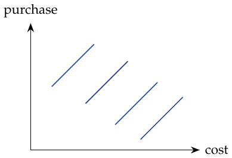

Chapter 14. Panel data and fixed effects
Panel data repeatedly observe the same unit over time. Holding identity fixed allows additive time-invariant individual characteristics to be removed with individual fixed effects.
Recall DID. For the treated city, estimate its untreated outcome after intervention by its untreated outcome before intervention plus the untreated city’s change over time: \[E[Y_0(1)\mid D=1]=E[Y_0(0)\mid D=1]+E[Y_0(1)-Y_0(0)\mid D=0].\]
Then \(\widehat{\mathrm{ATT}}=\widehat E[Y_1(1)\mid D=1]-\widehat E[Y_0(1)\mid D=1]\): the first is known, the second estimated. The example annotation mentions the effect of advertising in a DMA.
Parallel trends concerns the untreated mean change, as stated above; it does not assert the same identity for every individual’s potential outcome. The panel model is \[y_{it}=\beta X_{it}+\gamma U_i+e_{it}.\] \(y_{it}\) is the outcome for unit \(i\) at time \(t\), \(X_{it}\) varies with time, and \(U_i\) is unobserved and time-invariant.
Limits of panel data.
Panel data cannot solve reverse causality, where cause and effect reinforce one another; fixed effects cannot control this. They also cannot remove unobserved confounders that vary over time.
Residualizing a linear panel model.
For two groups of features, \(X_1,X_2\), \[\hat y=X_1\hat\beta_1+X_2\hat\beta_2.\] The feature matrix has observations as rows and features as columns.
Regress \(y\) on the second feature group: \(\hat y^*=P_{X_2}Y\).
Regress \(X_1\) on \(X_2\): \(\hat X_1=P_{X_2}X_1\).
Take residuals \(\widetilde X_1=X_1-\hat X_1\) and \(\widetilde y=y-\hat y^*\).
Regress the outcome residual on the feature residual, yielding the coefficient on \(X_1\).
Within transformation.
Compute \(\ddot Y_{it}=Y_{it}-\bar Y_i\) and \(\ddot X_{it}=X_{it}-\bar X_i\), then regress \(\ddot Y_{it}\) on \(\ddot X_{it}\). Since \(\bar U_i=U_i\), the fixed effect disappears: \[\begin{aligned} Y_{it}&=\beta X_{it}+\gamma U_i+e_{it},\\ \bar Y_i&=\beta\bar X_i+\gamma\bar U_i+\bar e_i,\\ Y_{it}-\bar Y_i&=\beta(X_{it}-\bar X_i)+\gamma(U_i-\bar U_i)+(e_{it}-\bar e_i),\\ \ddot Y_{it}&=\beta\ddot X_{it}+\ddot e_{it}. \end{aligned}\] This removes all unobserved characteristics that are constant over time. For time effects, such as inflation, add one dummy for each period; time-varying factors may also matter. Demeaned values sum to zero within a person; this centering identity holds even for time-varying variables. The fixed characteristic disappears because each of its demeaned values is zero. Causal interpretation still requires exogeneity, typically \(E[e_{it}\mid X_{i1},\ldots,X_{iT},U_i]=0\).
The sketch shows several parallel purchase-versus-cost lines. A fixed-effects model fits a line for each city and assumes a constant causal effect across conditions.

parallel within-city purchase–cost lines (blue).